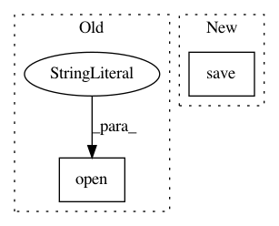

fed75c6c752c1f54f182545798106644ee1ba6af,rlkit/core/logging.py,Logger,save_itr_params,#Logger#,279
Before Change
elif self._snapshot_mode == "gap":
if itr % self._snapshot_gap == 0:
file_name = osp.join(self._snapshot_dir, "itr_%d.pkl" % itr)
pickle.dump(params, open(file_name, "wb"))
elif self._snapshot_mode == "gap_and_last":
if itr % self._snapshot_gap == 0:
file_name = osp.join(self._snapshot_dir, "itr_%d.pkl" % itr)
After Change
elif self._snapshot_mode == "gap_and_last":
if itr % self._snapshot_gap == 0:
file_name = osp.join(self._snapshot_dir, "itr_%d.pkl" % itr)
torch.save(params, file_name)
file_name = osp.join(self._snapshot_dir, "params.pkl")
torch.save(params, file_name)
elif self._snapshot_mode == "none":
pass
In pattern: SUPERPATTERN
Frequency: 3
Non-data size: 2
Instances
Project Name: vitchyr/rlkit
Commit Name: fed75c6c752c1f54f182545798106644ee1ba6af
Time: 2019-07-21
Author: vuoristo@gmail.com
File Name: rlkit/core/logging.py
Class Name: Logger
Method Name: save_itr_params
Project Name: snorkel-team/snorkel
Commit Name: b56a4b355dfc302fa449d223e065af3a7acac986
Time: 2018-05-03
Author: dnicholson329@gmail.com
File Name: snorkel/learning/pytorch/noise_aware_model.py
Class Name: TorchNoiseAwareModel
Method Name: save
Project Name: lcswillems/torch-rl
Commit Name: 3f196bcdd1e0310208e8978cf4f1fb590614568b
Time: 2018-04-15
Author: lcswillems@gmail.com
File Name: utils.py
Class Name:
Method Name: save_model